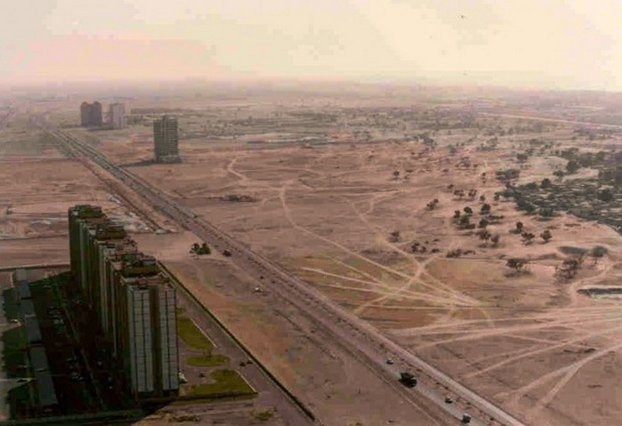
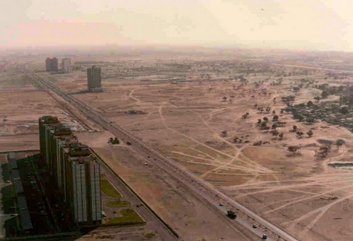

Дуба́й — крупнейший город Объединённых Арабских Эмиратов и глубоководный морской порт, административный центр одноимённого эмирата, важнейший торговый и финансовый центр ОАЭ и всего Ближнего Востока. Расположен на берегу Персидского залива. С начала XXI века он превратился в важный региональный и международный торговый центр, уделяющий особое внимание туризму и роскоши.


 

Регион, известный сегодня как Дубай, впервые был упомянут в 1095 году в «Книге географии» андалузско-арабского географа Абу Абдуллы аль-Бакри. Однако самые ранние значительные поселения в этом районе относятся к XVIII веку.
В XIX веке Дубай стал важным портом для иностранных торговцев, в первую очередь англичан и индийцев. Стратегическое географическое положение города вдоль южного маршрута Персидского залива идеально подходило для торговли. К концу XIX века Дубай превратился в крупный торговый центр. В этот период возникла индустрия жемчужного промысла, на время ставшая главным двигателем экономики Дубая. В 1930-х годах эта отрасль пришла в упадок из-за изобретения искусственного жемчуга и экономической депрессии.
Открытие нефти в 1966 году стало поворотным моментом в истории Дубая. Хотя запасы нефти в Дубае были значительно меньше, чем в соседнем Абу-Даби, доходы от продажи нефти позволили осуществить ряд амбициозных инфраструктурных проектов, которые заложили основу современного космополитического общества. Сейчас старых зданий в Дубае нет, зато создана очень достоверная имитация рыбацкой деревни прошлого века, где аккуратно и точно воспроизведены внешний облик и атмосфера того времени.
И в завершении: на фото справа — Дубай в 80-е годы XX века.